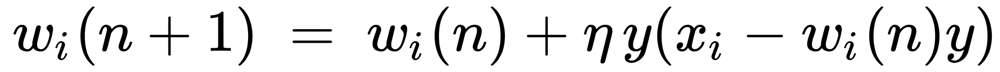
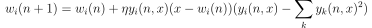
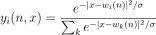

Om prosjektet
Studentene velger selv prosjektoppgave. Se under for foreslåtte problemstillinger.
Målet med prosjektoppgaven er at dere får erfaring med å løse et eller flere gitte praktiske problemstillinger ved hjelp av maskinlæring. Metodene dere bruker kan være de dere har lært i undervisningen/øvingene, eller nye metoder dere setter dere inn i.
Dere får karakter ut i fra jobben dere gjør, og selv om dere ikke oppnår ønsket resultat så er det likevel mulig å oppnå karakteren A. Med andre ord, noen problemstillinger kan være vanskelig å løse på en tilfredstillende måte, men letingen etter løsningen og konklusjonen fra resultatene kan fortsatt være svært interessant.
- Gruppestørrelse: 1-4 studenter
- Oppstart: 19.10
- Presentasjon: kommer senere
- Innlevering: kommer senere
- Skriv en liten oppsummering av arbeidet hver/annenhver uke (1-2 sider)
- i oppsummeringene får dere skrevet om arbeid som ikke nødvendigvis blir med i rapporten
- Rapport
- typisk struktur: introduksjon, tidligere relevant arbeid, metode, resultat, diskusjon, konklusjon og referanser
- ta utgangspunkt i at leseren tar/har tatt dette faget (IDATT2502)
- oppsummeringene, rapporten og kildekoden leveres på Blackboard som en komprimert fil
- Skriv en liten oppsummering av arbeidet hver/annenhver uke (1-2 sider)
- Møter med veileder hver/annenhver uke
Prosjektoppgaver
Velg en av oppgavene nedenfor, og send oppgave-tittel med eventuell prosjektbeskrivelse og deltakere (fullt navn og epost) til ole.c.eidheim@ntnu.no.
Frivillig oppgave
Veileder: tildelt etter kompetanse
Dere kan i samarbeid med en veileder (Ole, Donn, Jonathan eller Martin) lage deres egen oppgave. Send da en kort prosjektbeskrivelse til ole.c.eidheim@ntnu.no.
For inspirasjon til å finne en motiverende prosjektoppgave, kan dere se på tilgjengelige datasett, for eksempel:
I tilfellet dere vil utforske andre maskinlæringsmetoder som et forprosjekt til en spesifikk bachelor-oppgave innen maskinlæring, kan rapporten også skrives som en review article.
GPU/CPU parallellisering
Veileder: Ole C. Eidheim
Målet er å parallellisere en eller flere lokale læringsalgoritmer på grafikkort eller gjennom CPU tråder. Lokale læringsalgoritmer er et alternativ til ende til ende optimalisering av maskinlæringsmodeller gjennom backprop (som dere brukte i de 4 første ukene), der justeringen av vektene for et lag kun er avhengig av input til laget og laget selv. Dette er læringsalgoritmer som er mer biologisk plausible, men slike algoritmer er ikke støttet godt i rammeverk som PyTorch.
Velg enten oppgave 1 eller 2:
- Oppgave 1: Dette prosjektet kan fungere som litteraturstudie på GPU programmeringsbibliotek med sikte på å jobbe videre med problemstillingen i bacheloroppgaven.
- Oppgave 2: Parallellisere Oja's learning rule:
.
- Merk at w_i er her et element i vektoren w, og at denne læringsregelen fungerer på en w uavhengig av andre w.
- Initialiser flere w'er med tilfeldige tall (for eksempel mellom 0 og 1, men husk da å dele verdiene i MNIST på 255.0)
- Dere kan her for eksempel jobbe med MNIST datasettet, trekke ut tilfeldige 5x5 regioner fra
datasettet, og bruke disse regionene som input (x) i algoritmen. Dette vil danne første laget i
en CNN arkitektur, der de ulike vektene w tilsvarer filtrene.
- Dette kan gjøres i flere lag der dere trener først første laget for seg, og deretter neste lag for seg (vektene i første laget er da låst). Dette er kun aktuelt for læringsregelen fra Decorrelated Hebbian Learning for Clustering and Function Approximation (se under).
- Etter å ha parallellisert Oja's learning rule, kan dere prøve å parallellisere læringsregelen
gitt i Decorrelated Hebbian Learning for Clustering and Function Approximation (du finner denne
artikkelen i Prosjekt-mappen på blackboard):
,
der

- Merk at w_i(n) er her en vektor ved tidssteg n.
- Denne oppgaven kan også utvides til bacheloroppgave
Klassifisering av for eksempel roterte eller skalerte tall
Veileder: Ole C. Eidheim
Å lage modeller som er invariant i forhold til for eksempel rotasjon er noe som fortsatt jobbes med. I denne oppgaven skal dere snu litt på denne problemstillingen, og i stedet søke etter rotasjoner som gir høyest klassifiseringsscore (høyest "sannsynlighet" etter softmax) av allerede roterte tall. Søket vil bli gjort gjennom optimaliseringsmetoder dere tidligere har brukt, for eksempel SGD eller Adam.
Dere kan først enten trene deres egen MNIST CNN modell (med ikke-roterte tall), eller ta utgangspunkt i en ferdig trent CNN modell. Hvis dere bruker en ferdig trent modell, ta bort alle CNN lagene bortsett fra de 3-4 første lagene, der det første laget tar imot input x. Deretter skal dere låse vektene i modellen, legge til for eksempel en rotasjonsmatrise mellom x og det første CNN laget, og søke etter rotasjonsmatrisen som gir høyest klassifiseringsscore for et nytt allerede rotert tall x. Dere kan her først ta utgangspunkt i at dere allerede vet hvilke tall som er rotert.
Automatic detection and annotation of ads in podcasts
Supervisor: Donn Morrison
The aim is to detect and annotate podcast audio files automatically and dynamically such that the advertisements can be easily skipped or cropped from the file. Implementation could be a podcast proxy server that strips ads dynamically as they are downloaded. Some ideas for starting are:
- A short survey on types of podcast ads (e.g., dynamically inserted based on IP address (acast.com), ads spoken by podcast host, ads spoken by person who is not the podcast host, etc.)
- Speech recognition on the podcast audio, followed by topical segmentation with the asusmption that ads will contain different words
- Speech recognition followed by sentence segmentation and classification (ad vs not ad) by using a small training set
- See the Adblock Radio project: https://www.adblockradio.com/en/
Adversarial machine learning: Hacking trained models
Supervisor: Donn Morrison
There are many pretrained models available. Can you trick them into reliably misclassifying unseen examples? For example, what modifications can you make to traffic signs that are imperceptable to the human eye but that fool autonomous vehicles? What ethical implications are there if these models are deployed in society? How can our bug hunting methodologies (eg., red-teaming & penetration testing) be adapted to adversarial machine learning?
- https://en.wikipedia.org/wiki/Adversarial_machine_learning
- https://nvlpubs.nist.gov/nistpubs/ir/2019/NIST.IR.8269-draft.pdf
- NeurIPS 2018 tutorial on adversarial robustness: https://www.youtube.com/watch?v=TwP-gKBQyic
Applications of machine learning to reverse engineering
Supervisor: Donn Morrison
Consider a binary program X for which we do not know the instruction set architecture (ISA). We may see patterns in the program's binary data but we do not know what those patterns mean. Can we learn ISA properties from programs with known ISAs and transfer that knowledge to the program X to discover (among other things):
- Instruction format
- Memory bus width/register sizes (8-, 16-, 32-, or 64-bit)
- Encodings of frequent instructions (JMP, LOAD, STORE, ADD, etc.)
- Number of CPU registers
Software vulnerability detection in source code
Supervisor: Donn Morrison
Bug hunting takes a lot of time. What are the recent advances in using machine learning for bug hunting where source code is available? Implement such a technique (possibly restricted to one programming language), train it with as much data as possible, and test it on patched and unpatched code samples where a bug has been found and fixed.
- https://sci-hub.se/10.1109/MALTESQUE.2017.7882012
- https://resources.github.com/whitepapers/How-GitHub-secures-open-source-software/
- https://www.microsoft.com/security/blog/2020/04/16/secure-software-development-lifecycle-machine-learning/
Reinforcement Learning
Veileder: Jonathan Jørgensen
Velg (eller lag) et environment, og løs det med valgfri reinforcement learning-algoritme. Deretter kan man finne seg et spesifikt fokus i problemstillingen, f.eks. "Hvilken effekt har disse hyperparameterne på treningen og resultatet?" eller "Hvor likt vil to separat trente agenter oppføre seg?". Problemstilligen kan starte ganske generell (typ "spill tetris med DQN") og dermed spisses etterhvert i samarbeid med veileder.
For å finne ferdige environments kan dere sjekke ut OpenAI gym: https://gym.openai.com/. Dersom dere ønsker mer spenstige environment, slik som super mario, så kan dere søke på f.eks. github om det er noen som har laget det, bare pass på at det er kompatibelt med OpenAI-standarden for environments, da det gjør alt mye lettere.
Trafikkskilt
Veileder: Martin Johannes Nilsen
I denne oppgaven er det tenkt at en skal ta i bruk datasyn til å klassifisere trafikkskilt. Et eksempel på et relevant datasett er "German Traffic Sign Recognition Benchmark (GTSRB)" https://www.kaggle.com/meowmeowmeowmeowmeow/gtsrb-german-traffic-sign. Visualiser datasettet, og lag en modell som klarer å klassifisere et vilkårlig innsendt bilde. Klarer en for eksempel å klassifisere norske veiskilt, basert på trening på tyske? Sammenlikn gjerne ulike modeller opp mot hverandre - hvilke fungerer best, og hvorfor?
Språkdeteksjon
Veileder: Martin Johannes Nilsen
Naturlig språk kan by på problemer når en ønsker å klassifisere tekst. I denne oppgaven skal du trene en modell på språkdata, og se om du klarer å få den til å klassifisere riktig språk på ny, usett data. Et eksempel på datasett er: https://www.kaggle.com/zarajamshaid/language-identification-datasst. En spennende variant av denne oppgaven kan være å se om en maskinlæringsmodell for eksempel kan se forskjell på bokmål og nynorsk? Eller forskjell på dansk og norsk?